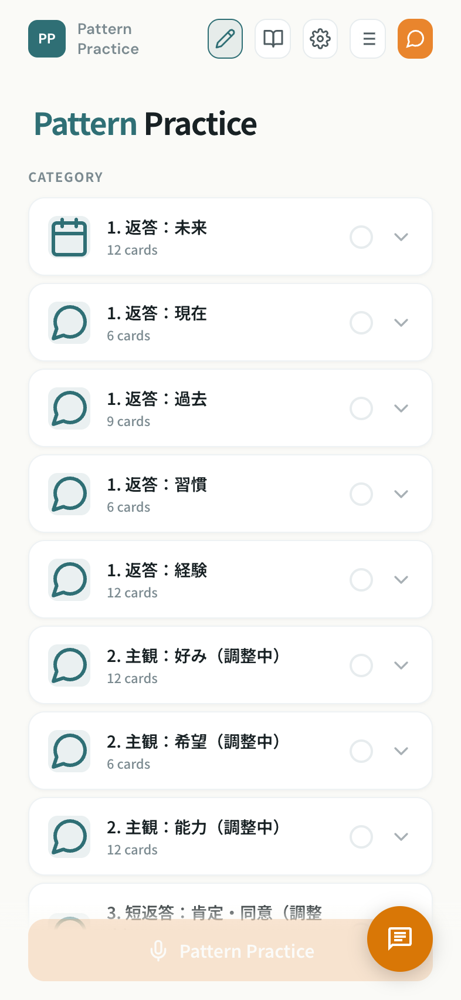
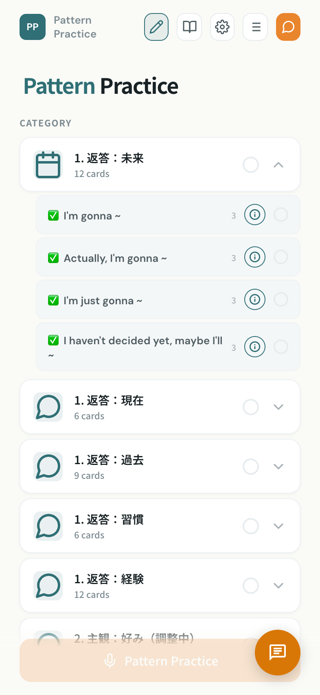
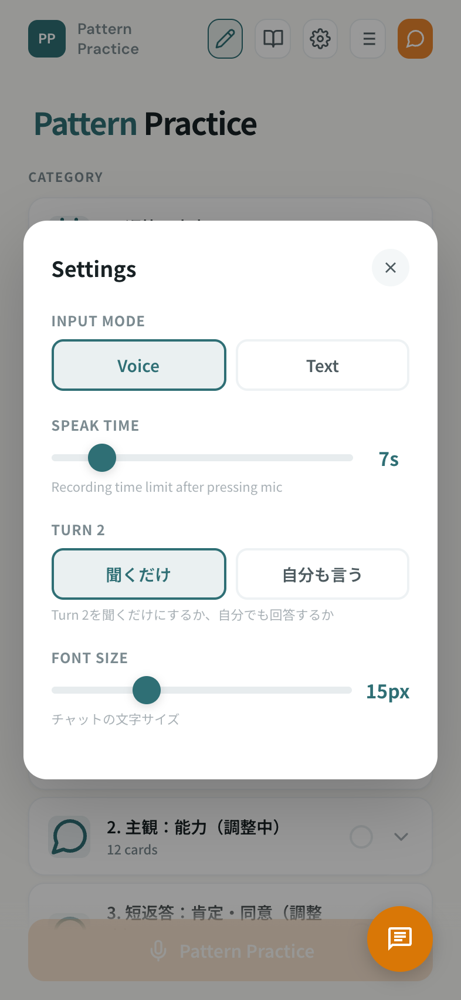
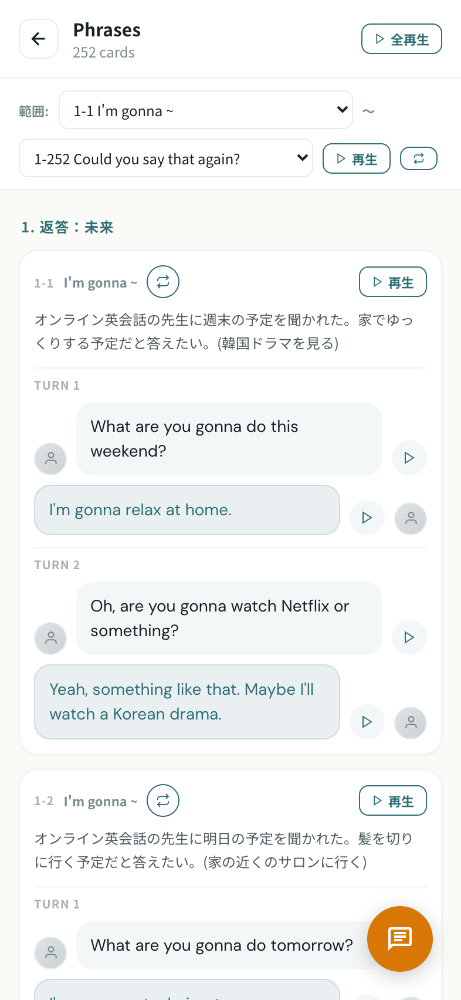

Pattern Practice
使い方ガイド
英語の質問を聞いて、声に出して答える練習です。
画面の操作方法をまとめました。
?
パターンプラクティスってなに?
英語で何か聞かれた時に、3秒以内にパッと返せるようにする練習です。
MasaEnglishの8ステップの中で、パターンプラクティスは一番大事なステップ。ここが全ての土台になります。
なぜこれが大事なの?
英語を「知ってる」のと「使える」のは、脳の中で全く別の処理です。
テストで正解できるのは「知ってる」状態。でも会話で聞かれた時にパッと出てくるのは「体が覚えてる」状態。この2つは別物です。
自転車と同じで、乗り方を知っているだけでは乗れない。何度も実際にやることで、考えなくても自然にできるようになる。英語も同じです。
日本の英語教育は、ほぼ全てが「知ってる」を増やすことに使われています。だから「知ってるのに話せない」が起きる。問題はあなたの能力ではなく、やり方です。
知識を「使える」に変える6ステップ
1. 知る — 文法・チャンクの意味と音を入れる
2. 作る — 場面を見て、自分で文を組み立てる
3. 速くする ← これがパターンプラクティス!
聞かれたことに対して、3秒以内に英語で答える練習。何度も繰り返すことで、考えなくても口から出てくるようになります。
4. 聞く — 自然な会話の中で、学んだ表現を聞き取る
5. 真似する — シャドーイングでネイティブの音を体に入れる
6. 使う — 実際の会話で使ってみる
パターンプラクティスは「3. 速くする」のステップ
文法やチャンクで「知った」ことを、パッと出せるように高速化するのがこの練習の役割です。ここを繰り返すことで、会話の土台ができます。
1
ホーム画面

1
カテゴリ — タップするとサブカテゴリ（チャンク）が展開されます。もう一度タップで閉じます。
2
サブカテゴリ（チャンク） — 練習したいチャンクを個別に選べます。タップでオン/オフ。カテゴリの丸ぽちを押すと全選択/全解除できます。
3
✅ 検品済みマーク — Masaが内容を確認済みのチャンクについています。
4
ⓘ 解説ボタン — タップすると、そのチャンクが「どういう場面で使うのか」の解説が表示されます。練習前に読むと、場面がイメージしやすくなります。

5
スタートボタン（画面下のオレンジボタン）— チャンクを選んだら、このボタンで練習開始です。
練習したいチャンクだけを選んで、集中的に繰り返すのがおすすめです。
2
ヘッダーのボタン
画面右上に4つのアイコンが並んでいます。それぞれの機能を説明します。
1
✏️ 編集モード（ペンアイコン）— 先生が教材を編集するためのモードです。受講生は使いません。
2
📖 カードビュー（本アイコン）— 2枚のカードを並べて表示する見開きモードです。
3
⚙️ 設定（歯車アイコン）— 入力モードや録音時間、フォントサイズを変更できます。
4
≡ 一覧（リストアイコン）— 全カードを一覧で確認・音声再生できます。

設定で変更できる項目:
INPUT MODE — Voice（声で回答）か Text（タイピングで回答）を選べます。電車の中など声が出せない場面ではTextが便利です。
SPEAK TIME — マイクボタンを押してから録音できる秒数です。初期値は7秒。長めに答えたい場合は伸ばしてください。
TURN 2 — 2往復目を「聞くだけ」にするか「自分も言う」にするか選べます。
FONT SIZE — チャットの文字サイズを調整できます。

一覧表示では、全てのカードの内容と音声をまとめて確認できます。再生ボタンで個別に音声を聞けます。
3
練習の流れ
練習はTurn 1 → Turn 2 → 自己評価 → 実践モードの流れで進みます。
Turn 1: 最初の質問に答える
1
シチュエーションが表示されます。「こういう状況で聞かれた」とイメージしてください。
2
相手の質問が吹き出しで表示され、音声も自動で流れます。
3
マイクボタンをタップして声で回答します。設定した秒数で自動で止まります。
4
回答後、あなたの答えと模範回答が表示されます。「できた」で次へ、「再度録音」でやり直しできます。
Turn 2: フォローの質問に答える
5
Turn 1の後、相手が追加の質問をしてきます。同じようにマイクで答えてください。
6
Turn 2が終わると自己評価です。「できた」「できなかった」を選びます。この記録が次の練習に活かされます。
実践モード: 自分の言葉で答える
自己評価が終わると、同じ質問がもう一度流れます。今度はシチュエーションや模範回答なしで、あなたなりの答えを自由に言ってみるコーナーです。
さっき練習したパターンを使って、自分の言葉で答えてみてください。
7
「ヒントを見る」 — パターン（I'm gonna ~ など）を忘れた時にタップすると確認できます。
ここが一番大事な練習です。模範回答をなぞるのではなく、自分の言葉で答えることで、本当に使える英語になります。
4
レッスンで追加された教材
先生がレッスン後に追加してくれたあなた専用のフレーズは、ホーム画面の一番上に「レッスンで追加（最近）」というカテゴリで表示されます。
レッスンの内容をもとにした練習なので、最優先で繰り返し練習してください。自分が実際に話したい内容だから、一番定着しやすいです。
レッスンの後に先生がフレーズを追加すると、自動的にあなたの教材に追加されます。特別な操作は不要です。次にページを開いた時にはもう入っています。
5
練習のコツ
暗記はしない!
暗記して→使う ではなく、使いながら→覚える。
これが最大のポイントです。
大事なポイント
- 必ず声に出すこと。読むだけ・聞くだけでは「出る」ようにはなりません
- 完璧じゃなくて大丈夫。7〜8割でどんどん先に進んでください
- 模範回答と違っても、意味が通じていれば正解です
- パッと出なければ、回答例を見て次に活かす方が効率的です
- 1回で完璧にするより、何周も繰り返すのが一番効果的です
大事なのは「何回やったか」です。
1回を完璧にするより、たくさん繰り返す方がはるかに効果があります。気楽にやりましょう!